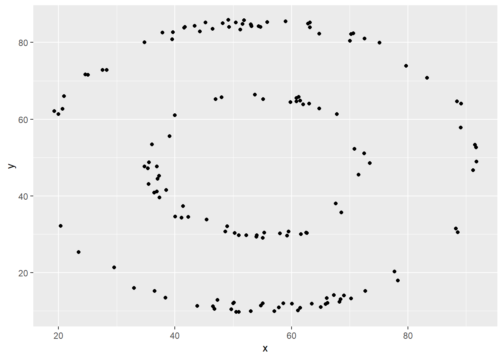

R is the name of the programming language itself and RStudio is a convenient interface.The main goal of this lab is to introduce you to R and RStudio, which we will be using throughout the course both to learn the statistical concepts discussed in the course and to analyze real data and come to informed conclusions.
git is a version control system (like "Track Changes" features from Microsoft Word on steroids) and GitHub is the home for your Git-based projects on the internet (like DropBox but much, much better).An additional goal is to introduce you to git and GitHub, which is the collaboration and version control system that we will be using throughout the course.
As the labs progress, you are encouraged to explore beyond what the labs dictate; a willingness to experiment will make you a much better programmer. Before we get to that stage, however, you need to build some basic fluency in R. Today we begin with the fundamental building blocks of R and RStudio: the interface, reading in data, and basic commands.
Each of your assignments will begin with the following steps. You can always refer back to this lab (or other labs) for a detailed list of the steps involved for getting started with an assignment.
This part you will do every time you have an assignment or lab.
#{r paste-gh-repo-url, fig.margin = TRUE, echo = FALSE, fig.width=5} #knitr::include_graphics("lab00-demonstration/img/copy-assignment-repo-link.png") #
Click on the assignment link that you should have received in your email to create your GitHub repository (which we’ll refer to as “repo” going forward) for the assignment. This repo contains a template you can build on to complete your assignment.
Note that it’s not in your GitHub folder, it’s in the coursespace (so I can see it but you can’t see each other’s) and it is a copy of the template that I made to be here.
On GitHub, click on the green Clone or download button, select Use HTTPS (this might already be selected by default, and if it is, you’ll see the text Clone with HTTPS as in the image below). Click on the clipboard icon to copy the repo URL. It will start with the class “bst-urmc” and end with your username “tanzylove” (for me) and the middle is based on what the assignment is named.
Go to RStudio clone the assignment repository. This is the one copy and paste into RStudio part that you will do each time you start to work.
### #'s comment out lines in R code
#you need to change this to the right repository and location for you and your local machine
usethis::create_from_github("https://github.com/bst-urmc/lab-1-tanzylove",
destdir="~/Documents/work/teaching/BST430/")
In this lab we will work with two packages: datasauRus
which contains the dataset, and tidyverse which is a
collection of packages for doing data analysis in a “tidy” way.
Install these packages by running the following in the console.
install.packages("tidyverse")
install.packages("datasauRus")Now that the necessary packages are installed, you should be able to Knit your document and see the results. This last package is only necessary as a helper to configure git to know about your github account.
If you’d like to run your code in the Console as well you’ll also need to load the packages there. To do so, run the following in the console.
library(tidyverse)
library(datasauRus)Note that the packages are also loaded with the same commands in your R Markdown document.
Before we introduce the data, let’s warm up with some simple exercises. The following video is an overview of some of these warmup exercises.
The top portion of your R Markdown file (between the three dashed lines) is called YAML. It stands for "YAML Ain't Markup Language". It is a (allegedly) human friendly way to represent data, and is used in multiple programming languages. All you need to know is that this area is called the YAML (we will refer to it as such) and that it contains meta information about your document.CHECK that the output lists html first. That will help later in the lab.
output:
html_document:
self_contained: no
tufte::tufte_html:Open the R Markdown (Rmd) file in your project, change the author name to your name, and knit the document.
Then Go to the Git pane in your RStudio.
If you have made changes to your Rmd file, you should see it listed here. Click on it to select it in this list and then click on Diff. This shows you the difference between the last committed state of the document and its current state that includes your changes. If you’re happy with these changes, write “Update author name” in the Commit message box and hit Commit.
You don’t have to commit after every change, this would get quite cumbersome. You should consider committing states that are meaningful to you for inspection, comparison, or restoration. In the first few assignments we will tell you exactly when to commit and in some cases, what commit message to use. As the semester progresses we will let you make these decisions.
Now that you have made an update and committed this change, it’s time to push these changes to the web! Or more specifically, to your repo on GitHub. Why? So that others can see your changes. And by others, we mean the course teaching team for individual assignments (your repos in this course are private to you and us, only).
Today we are trying a group assignment, so we need to Pull each time before we Push. Why? If your team member made a change and you Push, you could erase it.
In order to pull and push your changes to GitHub, click on Pull(down) and Push(up). This will popup a box to tell you the status. If there are no difference in the online repository, when you pull you’ll get “Already up to date.” If you have a committed change (or two) your push will show “HEAD -> main”.
If you’re working in a team today, let different people update and make changes. Try to Pull before you make edits so you’re working on the most current file.
If it's confusing that the data frame is called `datasaurus_dozen` when it contains 13 datasets, you're not alone! Have you heard of a [baker's dozen](https://en.wikipedia.org/wiki/Dozen#Baker's_dozen)?The data frame we will be working with today is called
datasaurus_dozen and it’s in the datasauRus
package. Actually, this single data frame contains 13 datasets, designed
to show us why data visualisation is important and how summary
statistics alone can be misleading. The different datasets are maked by
the dataset variable.
To find out more about the dataset, type the following in your Console:
A question mark before the name of an object will always bring up its help file. This command must be run in the Console.
1. Based on the help file, how many rows and how many columns does the `datasaurus_dozen` file have? What are the variables included in the data frame? Add your responses to your lab report. When you're done, commit your changes with the commit message "Added answer for Ex 1", and push.
Let's take a look at what these datasets are. To do so we can make a *frequency table* of the dataset variable:
```r
datasaurus_dozen %>%
count(dataset) %>%
print(13)## # A tibble:
## # 13 × 2
## dataset
## <chr>
## 1 away
## 2 bullseye
## 3 circle
## 4 dino
## 5 dots
## 6 h_lines
## 7 high_lines
## 8 slant_down
## 9 slant_up
## 10 star
## 11 v_lines
## 12 wide_lines
## 13 x_shape
## # … with 1
## # more
## # variable:
## # n <int>Matejka, Justin, and George Fitzmaurice. "Same stats, different graphs: Generating datasets with varied appearance and identical statistics through simulated annealing." Proceedings of the 2017 CHI Conference on Human Factors in Computing Systems. ACM, 2017.The original Datasaurus (dino) was created by Alberto
Cairo in this
great blog post. The other Dozen were generated using simulated
annealing and the process is described in the paper Same Stats,
Different Graphs: Generating Datasets with Varied Appearance and
Identical Statistics through Simulated Annealing by Justin Matejka
and George Fitzmaurice. In the paper, the authors simulate a variety of
datasets that the same summary statistics to the Datasaurus but have
very different distributions.
y vs. x for the dino
dataset. Then, calculate the correlation coefficient between
x and y for this dataset.Below is the code you will need to complete this exercise. Basically, the answer is already given, but you need to include relevant bits in your Rmd document and successfully knit it and view the results.
Start with the datasaurus_dozen and pipe it into the
filter function to filter for observations where
dataset == "dino". Store the resulting filtered data frame
as a new data frame called dino_data.
dino_data = datasaurus_dozen %>%
filter(dataset == "dino")There is a lot going on here, so let’s slow down and unpack it a bit.
First, the pipe operator: %>%, takes what comes
before it and sends it as the first argument to what comes after it. So
here, we’re saying filter the datasaurus_dozen
data frame for observations where dataset == "dino".
Second, the assignment operator: =, assigns the name
dino_data to the filtered data frame. You will also
sometimes see <- used, but I (AM) will be discouraging
its usage.
Next, we need to visualize these data. We will use the
ggplot function for this. Its first argument is the data
you’re visualizing. Next we define the aesthetic mappings.
In other words, the columns of the data that get mapped to certain
aesthetic features of the plot, e.g. the x axis will
represent the variable called x and the y axis
will represent the variable called y. Then, we add another
layer to this plot where we define which geometric shapes
we want to use to represent each observation in the data. In this case
we want these to be points,m hence geom_point.
ggplot(data = dino_data, mapping = aes(x = x, y = y)) +
geom_point()
If this seems like a lot, it is. And you will learn about the philosophy of building data visualizations in layer in detail next week. For now, follow along with the code that is provided.
For the second part of this exercises, we need to calculate a summary
statistic: the correlation coefficient. Correlation coefficient, often
referred to as \(r\) in statistics,
measures the linear association between two variables. You will see that
some of the pairs of variables we plot do not have a linear relationship
between them. This is exactly why we want to visualize first: visualize
to assess the form of the relationship, and calculate \(r\) only if relevant. In this case,
calculating a correlation coefficient really doesn’t make sense since
the relationship between x and y is definitely
not linear – it’s dinosaurial!
But, for illustrative purposes, let’s calculate correlation
coefficient between x and y.
Start with `dino_data` and calculate a summary statistic that we will call `r` as the `cor`relation between `x` and `y`.dino_data %>%
summarize(r = cor(x, y))## # A tibble: 1 × 1
## r
## <dbl>
## 1 -0.0645This is a good place to pause, commit changes with the commit message “Added answer for Ex 2”, and push.
y vs. x for the star
dataset. You can (and should) reuse code we introduced above, just
replace the dataset name with the desired dataset. Then, calculate the
correlation coefficient between x and y for
this dataset. How does this value compare to the r of
dino?This is another good place to pause, commit changes with the commit message “Added answer for Ex 3”, and push.
y vs. x for the circle
dataset. You can (and should) reuse code we introduced above, just
replace the dataset name with the desired dataset. Then, calculate the
correlation coefficient between x and y for
this dataset. How does this value compare to the r of
dino?You should pause again, commit changes with the commit message “Added answer for Ex 4”, and push.
Facet by the dataset variable, placing the plots in a 3 column grid, and don't add a legend.ggplot(datasaurus_dozen, aes(x = x, y = y, color = dataset))+
geom_point()+
facet_wrap(~ dataset, ncol = 3) +
theme(legend.position = "none")And we can use the group_by function to generate all the
summary correlation coefficients.
datasaurus_dozen %>%
group_by(dataset) %>%
summarize(r = cor(x, y)) %>%
print(13)You’re done with the data analysis exercises, but we’d like you to do two more things:
Click on the gear icon in on top of the R Markdown document, and select “Output Options…” in the dropdown menu. In the pop up dialogue box go to the Figures tab and change the height and width of the figures, and hit OK when done. Then, knit your document and see how you like the new sizes. Change and knit again and again until you’re happy with the figure sizes. Note that these values get saved in the YAML.
You can also use different figure sizes for different figures. To do
so click on the gear icon within the chunk where you want to make a
change. Turn on “Use custom figure size” and enter the size for this
figure. Changing the figure sizes added new options to these chunks:
fig.width and fig.height. You can change them
by defining different values directly in your R Markdown document as
well with code like this:
knitr::opts_chunk(fig.width=3, fig.height=3)Once again click on the gear icon in on top of the R Markdown document, and select “Output Options…” in the dropdown menu. In the General tab of the pop up dialogue box try out different Syntax highlighting and theme options. Hit OK and knit your document to see how it looks. Play around with these until you’re happy with the look.
Yay, you’re done! Commit all remaining changes, use the commit message “Done with Lab 1!”, and push. Before you wrap up the assignment, make sure all documents are updated on your GitHub repo.
10 points if code and descriptions are complete for all questions. 5 points for >= five commits with informative messages made to the repo.